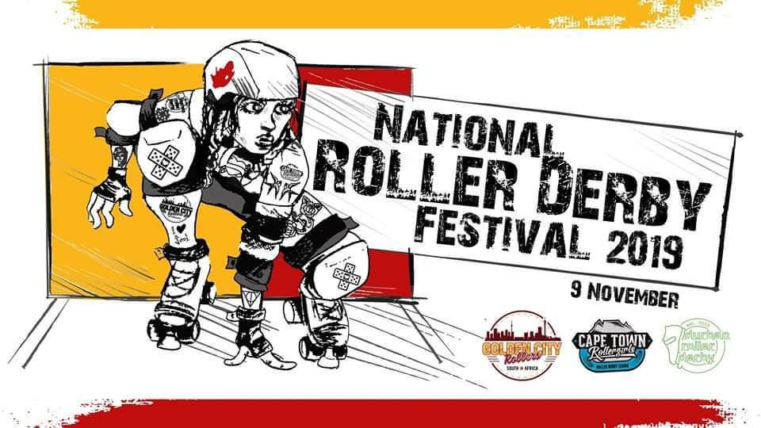

South Africa's National Derby Fest 2019
The South African National Roller Derby Festival ("National Derby Fest") may be the smallest of the National Tournaments we covered last year , but it's also potentially one of the more important to its community. As we covered in our article on the South African roller derby community earlier this year , the population of South Africa is concentrated in a small number of widely-separated areas, so it's very expensive for the teams to play each other (let alone teams from other nations). As such, having this one big event at the end of the year is an achievable focus, and the community time it provides is all the valuable for it.
In last year's NDF, Johannesburg's Golden City Rollers , and Cape Town Rollergirls competed for the final rankings:
- Golden City Rollers
- Cape Town Rollergirls
(The third team present, Durban Roller Derby, participated in the first two bouts, mixed teams games with skaters from all three teams.)
This year's National Derby Fest has a change of format, designed to maximise the amount of game play each team got. As such, this is National Derby Fest is a double round robin: each team will play the others twice, in half-length games (two 15 minute periods). As numbers for all teams are a little low this year, this will allow everyone to The fourth league in South Africa, Pretoria's P-Town Roller Derby, will be donating a skater to the Cape Town team, and we assume will be donating volunteers.
The winners on points will go forward to play each other in a full-length WFTDA-regulation Final.
Golden City Rollers told us:
NDF is the highlight of the local derby calendar, so we're super excited to host it this year, and to see all our sister leagues again. Of course, the most important thing is to play some derby and enjoy every second, as we don't often get a chance to compete in SA. Secondly, it's an opportunity to introduce new spectators to the sport, so we're hoping it will help grow roller derby in SA.
National Derby Fest 2019 will be hosted at: Uniao Portuguesa, 4 Eastwood street, Turffontein, Johannesburg, South Africa, on 9 November, starting at 0930.